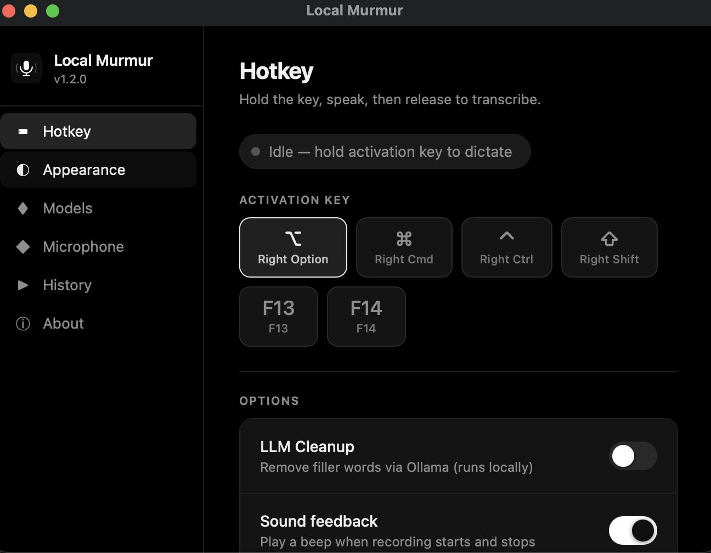
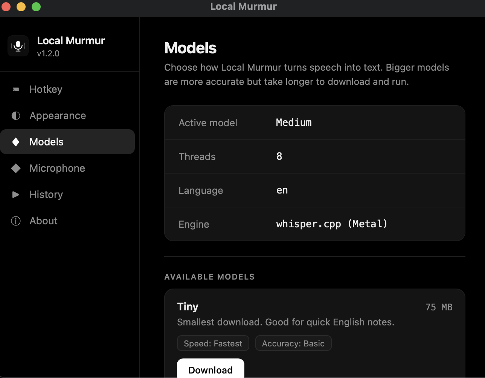
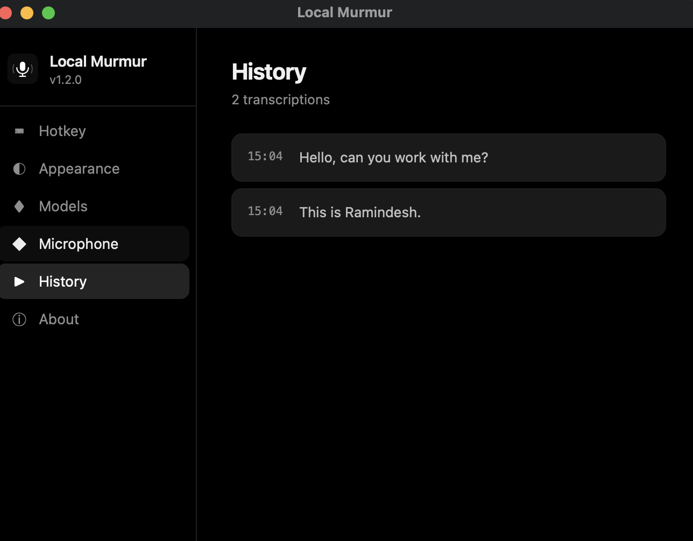

Talk to your Mac.
Let it type perfectly.
A fully local, private voice dictation tool for macOS. Inspired by Wispr Flow. Speak any of 99 languages, get instant English text via whisper.cpp, polished with Ollama.
Fully Featured. Fully Local.
Local Murmur gives you the power of cloud-based voice transcription, completely running offline on your own machine.
System-wide Hotkey
Hold down the Right Option key to start dictating in any text box, editor, or browser. Let go to type. Simple and seamless.
Whisper.cpp + Metal Acceleration
Transcriptions are incredibly fast and power-efficient. Designed to utilize the Apple Silicon Neural Engine & GPU via Metal.
Any Language → English
Speak in any of 99 supported languages — or mix them mid-sentence — and Local Murmur auto-detects and translates everything to clean English text.
Ollama Llama 3.2 Post-Processing
Automatically removes verbal stutters ("um", "uh", "like") and formats rough transcriptions into polished, professional text using Ollama offline.
100% Offline & Private
Your voice data never leaves your computer. No cloud processing, no surveillance, no API limits, and absolutely zero subscriptions.
Auto-paste Anywhere
Injects polished text directly into active windows (Chrome, Slack, Cursor, Notes, etc.) via secure AppleScript commands instantly.
A native macOS settings experience.
Pick your activation key, switch Whisper models, tune the accent color, and review your dictation history — all from a clean panel that lives quietly in your menu bar.



Get Started in Three Steps
Set up your local dictation workspace in under 3 minutes.
Download & Install
Grab the latest version of the DMG and drag **Local Murmur.app** to your Applications folder.
Download DMG (.dmg) →Set up Ollama
Install Ollama on your Mac and download the default formatting model via the terminal:
ollama run llama3.2
Dictate Anywhere
Launch the application, grant accessibility permissions, and start dictating by holding down the Right Option key.
Upgrade your typing workflow today
Experience fully local, intelligent voice-to-text. Free, open source, and completely private.